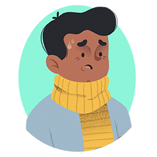

Penyebab COVID-19
COVID-19 awalnya ditularkan dari hewan ke manusia. Setelah itu, diketahui bahwa infeksi ini juga bisa menular dari manusia ke manusia. Penularannya bisa melalui cara-cara berikut :
Kontak Tangan
Memegang tangan seseorang yang mengidap penyakit COVID-19

Batuk
Menghirup percikan ludah yang keluar saat penderita COVID-19 batuk

Tanpa Masker
Kontak jarak dekat dengan penderita COVID-19 tanpa mengenakan masker